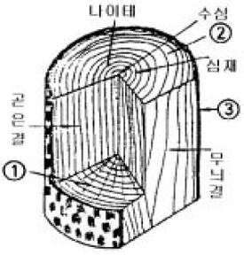
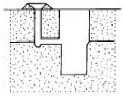
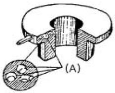
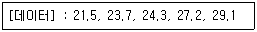

주조기능장 (2005-07-17 기출문제)
1과목: 임의 구분
1. 후란수지를 점결제로 사용하는 주형사에서 모래 100에 대한 경화제의 적당한 사용량은?
- 30∼40%
- 0.3∼0.4%
- 3∼4%
- 4∼6%
(정답률: 65%)

2. 표면모래는 어느 성질이 가장 필요한가?
- 점결력이 클 것
- 통기도가 좋을 것
- 내화도가 높을 것
- 성형성이 좋을 것
(정답률: 69%)
3. 상형,하형부분의 모형이 분리선(parting line)을 구성하는 평판의 양측에 붙어있고 일반적으로 탕구계(湯口系) 탕도계(湯道系)도 함꼐 붙어있는 소형주물의 다량 생산에 적합한 모형은?
- master pattern
- pattern plate
- pattern draft
- match plate
(정답률: 55%)
4. 수축여유와 가공여유를 이중으로 주는 원형은?
- 목형
- 금형
- 석고형
- 플라스틱형
(정답률: 71%)
5. 압력제어 밸브 고장의 원인 중 압력이 너무 높거나 지나치게 낮을 때의 원인이 아닌 것은?
- 스프링의 강도가 적절한 경우이다.
- 조정핸들에 대한 압력설정이 적당치 않다.
- 니들밸브가 정확하게 맞지 않고 있다.
- 밸런스 피스톤의 작동 불량이다.
(정답률: 79%)
6. 주물사의 통기도를 구하는 식이 맞는 것은? [단, V = 시험편을 통과한 공기의 양(cc), h = 시험편의 높이(㎝), P = 시험편 상하의 압력차이에 의한 수주의 높이(㎝/Hg), A = 시험편의 단면적(cm2), t = 공기가 통과하는데 걸리는 시간(분)]
- Vh / PAt
- VA / Pht
- PV / Aht
- PA / Vht
(정답률: 70%)
7. 동합금 주물에서 Mold reaction 을 촉진시키고 유동성을 가장 좋게 하는 원소는?
- Ca
- Al
- S
- P
(정답률: 65%)
8. 150번 도가니에서 Al을 약 몇 Kg정도 녹일 수 있는가? (단, Cu 비중 8.9, Al 비중 2.7)
- 약 27.5kg
- 약 45.5kg
- 약 1⑤.5kg
- 약 130.5kg
(정답률: 71%)
9. 다이캐스팅용 Al합금이 갖추어야 할 조건으로 틀린 것은?
- 열간 취성이 적을 것
- 응고 수축에 대한 용탕보급성이 좋을 것
- 금형에 소착되지 않을 것
- 점성이 대체로 클 것
(정답률: 75%)
10. 제도용지의 폭과 길이의 비율은 얼마인가?
- 1 : 2
- 2 : 1
- 1 : √2
- √2 : 1
(정답률: 72%)
11. 주철을 용해하는데 적합한 것은?
- 용광로
- 고로
- 용선로
- 균열로
(정답률: 66%)
12. 다음 그림은 목재의 조직을 도시한 것이다. ①,②,③의 명칭은?

- ①적재 ②성장테 ③추재
- ①춘재 ②수선 ③정목
- ①변재 ②조재 ③수재
- ①수선 ②변재 ③수피
(정답률: 71%)
13. 규사에 규산나트륨을 4∼6% 첨가, 혼련시켜 CO2가스를 불어넣어 경화시키는 주형법은?
- 자경성 주형법
- 마그네틱 주형법
- CO2 주형법
- 시멘트계 주형법
(정답률: 83%)
14. 쇳물 온도 측정기로서 전구의 필라멘트의 밝기를 저항기에 바꿔 밝기를 표준으로 해서 고온체 광도와 전구의 색을 일치시켜 온도를 측정하는 휴대가 가능한 쇳물 측정기는?
- 열전 고온도계(Thermo eletric Pyrometer)
- 광고 온도계(Optical Pyrometer)
- 색 고온계(Pyroversum Pyrometer)
- 복사 고온계(Radiation Pyrometer)
(정답률: 74%)
15. Cupola 조업시 바닥에 물이 고이면 어떤 현상이 일어나는가?
- 코크스 비가 저하한다.
- 수증기 폭발의 위험이 있다.
- 출선량이 증가한다.
- 소화작업이 쉬워진다.
(정답률: 80%)
16. 구멍과 축이 억지 맞춤일 때는 어느 경우인가?
- 구멍의 최소 허용치수 ＞ 축의 최대 허용치수
- 구멍의 최대 허용치수 ＞ 축의 최소 허용치수
- 구멍의 최대 허용치수 ＜ 축의 최소 허용치수
- 구멍의 최소 허용치수 = 축의 최대 허용치수
(정답률: 76%)
17. 전동기의 정, 역전회로 등에서 다른 계전기의 동시 동작을 금지시키는 회로는?
- 인터로그회로
- 입력우선회로
- 기동우선회로
- 정지우선회로
(정답률: 79%)
18. 최초로 주입된 용탕을 포착하여 불순물등을 제거하는 탕구계의 부위는?
- 탕구
- 주입구
- 탕도
- 탕도선
(정답률: 56%)
19. 합금의 수축으로 체적이나 치수가 감소하는데 아무 장해가 없을 때의 수축을 무슨 수축이라고 하는가?
- 체적수축
- 선수축
- 자유수축
- 주조수축
(정답률: 72%)
20. 구상 흑연주철품에 해당하는 기호는?
- GC
- GCD
- BSC
- SC
(정답률: 71%)
2과목: 임의 구분
21. 도면에 40 + 0.0⑤ ∼ -0.003 으로 표시된 공차의 범위에 해당되는 것은?
- 0.002
- -0.002
- 0.008
- 0.0002
(정답률: 69%)
22. 탄소강을 기름에 소입하였을때 600℃Ar' 변태 부근에서 나타나는 조직은?
- 퍼얼라이트(pearlite)
- 마르텐사이트(martensite)
- 트루스타이트(troostite)
- 소르바이트(sorbite)
(정답률: 56%)
23. 그림의 탕구는 어느 것인가?

- parting line gate
- bottom gate
- top gate
- top pencil gate
(정답률: 70%)
24. 후란(Furan)계 수지의 종류를 열거 하였다. 틀린 것은?
- 훌후릴알콜/포름알데히드계 수지(FA/F)
- 요소 포름알데히드/훌후릴알콜계 수지(UF/FA)
- 페놀-포름알데히드/훌후릴알콜계 수지(PF/FA)
- 요소-페놀/훌후릴알콜계 수지(UP/FA)
(정답률: 57%)
25. 그림과 같은 결함(A)의 명칭은 무엇인가?

- cold shot
- shrinkage cavity
- inculusion
- blister
(정답률: 70%)
26. 용선로 용해에 있어서 컴퓨터 제어 항목이 아닌 것은?
- 용해속도
- 용선제고량
- 주입속도
- 주물냉각속도
(정답률: 71%)
27. 다음 중 Core box로 사용되는 것으로 틀린 것은?
- 동합금형
- 목형
- Shell형
- Al형
(정답률: 64%)
28. 주철주물에 있어서 인장강도가 급격히 저하되는 온도는?
- 300℃
- 400℃
- 550
- 650℃
(정답률: 58%)
29. 구리, 황동, 청동의 현미경 조직시험에 필요한 부식액으로 맞는 것은?
- 피크린산 5% + 알코올 용액
- 염화제이철 5g + 진한 염산 50cc + 물 100cc
- 피크린산 2g + 가성소오다 25g을 물에 녹여 100cc로 한 것
- 염산 15cc + 피크린산 1g + 알코올 100cc
(정답률: 65%)
30. 코어프린트 부착목적 중 관련이 가장 적은 것은?
- 코어의 위치결정
- 코어의 부상방지
- 가스배출
- 코어사 제거용이
(정답률: 61%)
31. 탄소와 실리콘의 함량이 가장 높은 범위에 속하는 주철 재료는?
- 강인주철
- 흑심가단 주철
- 백심가단 주철
- 구상흑연 주철
(정답률: 62%)
32. 원판을 만드는데 가장 편리한 목공기계는?
- band saw
- circular saw
- planner
- belt sander
(정답률: 67%)
33. 수동식 졸트 스퀴즈 조형기에 사용할 메치플레이트로 가장 적합한 재료는?
- 알루미늄제
- 목제
- 주철제
- 청동제
(정답률: 50%)
34. 다음의 예는 주물재질과 탈산제 또는 탈가스제를 짝지은 것이다. 이중에 틀린 것은?
- 구리합금-인동(燐銅)
- Al합금 - Cl2가스
- 주강 - Al
- 주철 - Ca
(정답률: 58%)
35. 강자성체의 금속은?
- Co
- Ag
- Cu
- Bi
(정답률: 64%)
36. 강의 냉간가공시 감소되는 기계적 성질은?
- 경도
- 항복점
- 인장강도
- 연신율
(정답률: 69%)
37. 회주철품의 주조품 시험검사에서 주조품을 파괴하여야 할 수 있는 검사법은?
- 외형검사
- 치수검사
- 중량검사
- 조직검사
(정답률: 78%)
38. 다음 중 주물사의 노화원인으로 틀린 것은?
- 사립의 이상팽창에 의한 균열
- 점결제의 점결력 상실
- 주물사와 접결제의 mold reaction 저하
- 사립의 형상 변형
(정답률: 68%)
39. 불량목형을 방지하여 우수한 주물을 생산하려면 종합적인 대책이 필요하다. 바람직하지 않은 것은?
- 목형제작자에게 주형 조형 기술에 대한 교육보다 목형제작교육이 필요하다.
- 목형 제작 방안을 확립하여 목형을 제작한다.
- 검사 부문을 강화시켜서 검사원이 반드시 검사하도록 한다.
- 정기적 교육과 검사에 따른 품질관리 교육도 겸하여 실시한다.
(정답률: 77%)
40. 목재를 톱으로 잘라가면 톱날이 끼여서 톱질이 어려워진다. 이와 같은 현상을 줄이기 위하여 날끝을 양쪽으로 엇갈리게 구부린 것은 ?
- 날어김
- 피치
- 절삭각
- 측면 경사각
(정답률: 77%)
3과목: 임의 구분
41. 원심 주조법의 특징을 설명한 것 중 틀린 것은?
- 편석이 발생하기 쉽다.
- 주로 원통형의 제작에 용이하다.
- 내부조직이 외부조직보다 치밀하다.
- Core가 필요없다.
(정답률: 62%)
42. 목재가 원형제작에 가장 많이 사용되는 이유로 볼 수 없는 것은?
- 금속에 비해 재료비, 가공비가 싸며, 다량생산, 특별한 정도를 고려하지 않은 경우에 유리하다.
- 석재, 시멘트 등에 비해 가볍고 가공성이 좋으며 취성이 적다.
- 합성수지에 비해 값이 싸고, 소량의 경우에도 가공비가 싸다.
- 기계적 강도가 금속 및 합성수지보다 약하며, 치수의 정밀성을 유지하지 못한다.
(정답률: 66%)
43. 다음중 염기성 내화물은?
- 규사
- 돌로마이트
- 내화점토
- 납석
(정답률: 67%)
44. 용금의 물리적 침투나 화학반응이 일어나는 것을 막고 주형 표면을 곱게하기 위하여 주형표면에 도장을 하는 것을 무엇이라 하는가?
- 이형제
- 도형제
- 첨가제
- 점결제
(정답률: 73%)
45. 연천인율을 바르게 설명한 것은?
- (평균근로자수 / 재해자수) ×1000
- (연근로시간 / 재해건수) ×1000
- (재해자수 / 평균근로자수) ×1000
- (근로손실일수 / 연근로시간수) ×1000
(정답률: 71%)
46. 흑연이 존재하지 않는 것은?
- 흑심가단주철
- 구상흑연주철
- 백주철
- 회주철
(정답률: 79%)
47. 주조품의 내부결함을 찾아낼 수 있는 비파괴 시험법은?
- 육안검사법
- 염색침투탐상법
- 초음파탐상법
- 침투탐상법
(정답률: 81%)
48. 모형공장 규모에 대한 설명 중 틀린 것은?
- 모형공장의 크기는 주물공장 크기의 1/3 - 1/4 정도가 적당하다.
- 모형공장의 작업면적은 1인당 약 10 - 17m2 정도가 적당하다.
- 정숙한 환경으로 밝기가 100럭스(Lx) 이상이어야 한다.
- 작업장에는 작업의 능률상 기계, 작업대, 조립 정반 등을 함께 동시에 배치함이 좋다.
(정답률: 70%)
49. 컴퓨터에 의한 공정계획(CAPP)시스템의 장점 중 틀린 것은?
- 공정합리화와 표준화
- 다른 응용프로그램의 통합
- 공적계획 리드타임의 증가
- 공정계획 입안자의 생산성증가
(정답률: 67%)
50. 목형의 주체가 되는 부분이나 치수의 정밀을 요하는 부분에 사용되는 목재는?
- 정목(柾目)
- 판목(板目)
- 종목(縱目)
- 변재(邊材)
(정답률: 73%)
51. 부식이 가장 일어나기 쉬운 금속재료는?
- Fe
- Au
- Pt
- Cu
(정답률: 77%)
52. cupola 조업에서 슬랙(slag)의 염기도를 구하는 식은 ?
- (CaO+MgO) / SiO2
- (CaO+SiO2) / MgO
- (SiO2+MgO) / CaO
- SiO2 / (CaO+MgO)
(정답률: 72%)
53. 주물사에 사용되는 점결제중 유기질 점결제에 속하는 것은 ?
- 벤토나이트(Bentonite)
- 피치(Pitch)
- 내화점토(Fire clay)
- 몬트모리노 나이트(Montmorilonite)
(정답률: 53%)
54. 작업환경과 관련이 가장 먼 것은?
- 온도
- 냉수관리
- 소음
- 분진
(정답률: 80%)
55. 다음 중 로트별 검사에 대한 AQL 지표형 샘플링검사 방식은 어느 것인가?
- KS A ISO 2859-0
- KS A ISO 2859-1
- KS A ISO 2859-2
- KS A ISO 2859-3
(정답률: 67%)
56. 다음 데이터로부터 통계량을 계산한 것 중 틀린 것은?

- 중앙값(Me) = 24.3
- 제곱합(S) = 7.59
- 시료분산(s2) = 8.988
- 범위(R) = 7.6
(정답률: 70%)
57. 여력을 나타내는 식으로 가장 올바른 것은?
- 여력 = 1일 실동시간 × 1개월 실동시간 × 가동대수
- 여력 = (능력 - 부하) ⒡ 1/100
- 여력 = (능력 - 부하)/능력 ⒡ 100
- 여력 = (능력 - 부하)/부하 ⒡ 100
(정답률: 69%)
58. 다음 중 계량치 관리도는 어느 것인가?
- R 관리도
- nP 관리도
- C 관리도
- U 관리도
(정답률: 53%)
59. 생산보전(PM:Productive Maintenance)의 내용에 속하지 않는 것은?
- 사후보전
- 안전보전
- 예방보전
- 개량보전
(정답률: 63%)
60. 다음 중에서 작업자에 대한 심리적 영향을 가장 많이 주는 작업측정의 기법은?
- PTS법
- 워크 샘플링법
- WF법
- 스톱 워치법
(정답률: 57%)
적당한 경화제의 사용량은 모래 100의 양에 따라 다르며, 일반적으로 0.3∼0.4% 정도가 적당합니다. 이유는 경화제의 양이 너무 적으면 모델의 경도가 충분하지 않아 파손될 수 있고, 너무 많으면 경도가 너무 높아져 모델의 표면이 거칠어질 수 있기 때문입니다. 따라서 적당한 양의 경화제를 첨가하여 적절한 경도를 유지하는 것이 중요합니다.
따라서 정답은 "0.3∼0.4%"입니다.